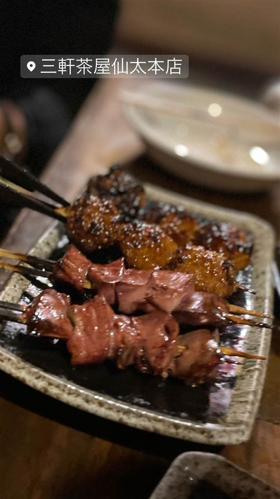

仙太 本店（せんた）
創業45年、備長炭で焼く美桜鶏の10本盛り
三軒茶屋仙太本店
三軒茶屋の老舗焼き鳥店。備長炭でじっくり焼き上げる美桜鶏の串を、創業以来継ぎ足してきたタレやブレンド塩で提供し、深夜まで営業する気軽さで長年愛されている。
TRIVIA
豆知識
- タレは創業以来ずっと継ぎ足しながら受け継がれている
- 10本盛り1,200円など、原価率が100%を超えることもあるという良心的な価格設定
REVIEWS
世間の評判
3.31食べログ
160円均一の焼き鳥と提供の遅さ
- 焼き鳥や刺身、前菜まで幅広いメニューが美味しいという声が多い
- 焼き鳥が160円均一で値段が手頃だと感じる客が多いという声がある
- スタッフの元気な接客と初来店客への丁寧な説明を評価する声が多い
- 料理の提供が遅く4時間ほど待たされたという声もあり狭い座席も指摘される
食べログ 口コミ134件
| 創業 | 老舗として長く営業しており、メディアでは創業45年と紹介されている。 |
|---|---|
| 看板 | 焼き鳥（10本盛り1,200円） |
| こだわり | 備長炭でじっくり焼き上げ、創業以来継ぎ足してきたタレと、3種をブレンドしたこだわりの塩で提供。コクのある美桜鶏を使用。 |
| どこから | 23区の外れ・近郊 |
| 予算 | 夜 ¥4,000～¥4,999 |
| 場所 | 三軒茶屋 東京都世田谷区三軒茶屋 |
| メモ | 営業は18:00〜翌2:00の深夜まで、年中無休。開店と同時に混み合う人気店。 |
食べたもの：焼き鳥
NEARBY
近い店・同じ系統の店
-
 ★
醤油・中華そば 三軒茶屋駅
めん和正（わしょう）
看板のない行列店、永福町大勝軒系の煮干し中華そば
昼 ～¥999 夜 ～¥999
★
醤油・中華そば 三軒茶屋駅
めん和正（わしょう）
看板のない行列店、永福町大勝軒系の煮干し中華そば
昼 ～¥999 夜 ～¥999
-
 ★
醤油・中華そば 三軒茶屋
らーめん・わんたん ゆう輝屋
たんたん亭に連なる系譜の透き通った醤油ワンタン麺
昼 ¥1,000～¥1,999 夜 ¥1,000～¥1,999
★
醤油・中華そば 三軒茶屋
らーめん・わんたん ゆう輝屋
たんたん亭に連なる系譜の透き通った醤油ワンタン麺
昼 ¥1,000～¥1,999 夜 ¥1,000～¥1,999
-
 パスタ 三軒茶屋駅
トラットリア ピッツェリア ラルテ（Trattoria e Pizzeria L'ARTE）
ビブグルマン掲載、ピザ百名店4度選出のVPN認定ナポリピッツァ
昼 ¥3,000～¥3,999 夜 ¥8,000～¥9,999
パスタ 三軒茶屋駅
トラットリア ピッツェリア ラルテ（Trattoria e Pizzeria L'ARTE）
ビブグルマン掲載、ピザ百名店4度選出のVPN認定ナポリピッツァ
昼 ¥3,000～¥3,999 夜 ¥8,000～¥9,999
-
 天ぷら・天丼 三軒茶屋
てんぷら横丁 わばる 三軒茶屋店
薄衣でサクサクの江戸前串天ぷらを塩やソースで味変
昼 ～¥999 夜 ¥2,000～¥2,999
天ぷら・天丼 三軒茶屋
てんぷら横丁 わばる 三軒茶屋店
薄衣でサクサクの江戸前串天ぷらを塩やソースで味変
昼 ～¥999 夜 ¥2,000～¥2,999
-
 お好み焼き・もんじゃ 三軒茶屋
緒駕多（おがた）
自由が丘で5年修行した店主の、京都仕込みの出汁とソース
昼 ¥1,000～¥1,999 夜 ¥2,000～¥2,999
お好み焼き・もんじゃ 三軒茶屋
緒駕多（おがた）
自由が丘で5年修行した店主の、京都仕込みの出汁とソース
昼 ¥1,000～¥1,999 夜 ¥2,000～¥2,999
-
 喫茶店 三軒茶屋
MOON FACTORY COFFEE
京都の名店の姉妹店で味わう北海道美幌豆のハンドドリップ
昼 ¥1,000～¥1,999 夜 ¥1,000～¥1,999
喫茶店 三軒茶屋
MOON FACTORY COFFEE
京都の名店の姉妹店で味わう北海道美幌豆のハンドドリップ
昼 ¥1,000～¥1,999 夜 ¥1,000～¥1,999